I currently work as a Mechatronic Engineer
at the Leibniz Institute for Astrophysics Potsdam specializing in precision robotic systems.
My current work focuses on designign and developing a hihg-precision robotic fiber positoner for the next-generation
Wide-field Spectroscopic Telescope. My focus also extends to the MOS focal surface and the specialized modules engineered to house the system.
My background spans bio-inspired robotics, autonomous drivetrains,
CNC fabrication, and experimental aerodynamics, grounded in dual
engineering and applied mathematics degrees.
Undergraduate R&D, Swarthmore College, June 2023 to January 2024. With Dr. Carr Everbach and Dr. Karen Chan.
Nitinol SMA actuation
ESP32
Custom PCB
Fusion 360
MATLAB
C
Like most crustaceans, barnacles have a naupliar form that has three pairs of limbs, which are used in both feeding and swimming. Furthermore, they all have the taxon-defining pair of frontal horns. Body extensions, as such, can influence the hydrodynamics of the larvae by acting as sea anchors.
To better understand the role of body extensions and their interactions with limb motion in larval function, we set forth to develop a robotic system to analyze the swimming pattern of barnacle nauplii.
To ensure the robot was lightweight and compact, Nitinol springs were used as a substitution for conventional motors.
Springs were controlled with a microcontroller that could either enable the flow of electrical current through the springs, causing them to heat up and contract, or halt the current flow, allowing the springs to cool down and expand.
Utilizing a series of springs, microcontrollers, and 3D-printed components, the cyclic motion of the nauplius's power and recovery stroke within their swimming pattern was successfully replicated.
In future, this robotic model will undergo testing in a viscous fluid, and particle image velocimetry will be used to analyze the flow patterns during the robot's free swimming.
The development of this robotic system helps inform the role of body extensions in low to intermediate Re swimmers and, more broadly, the evolution of planktonic larval form.
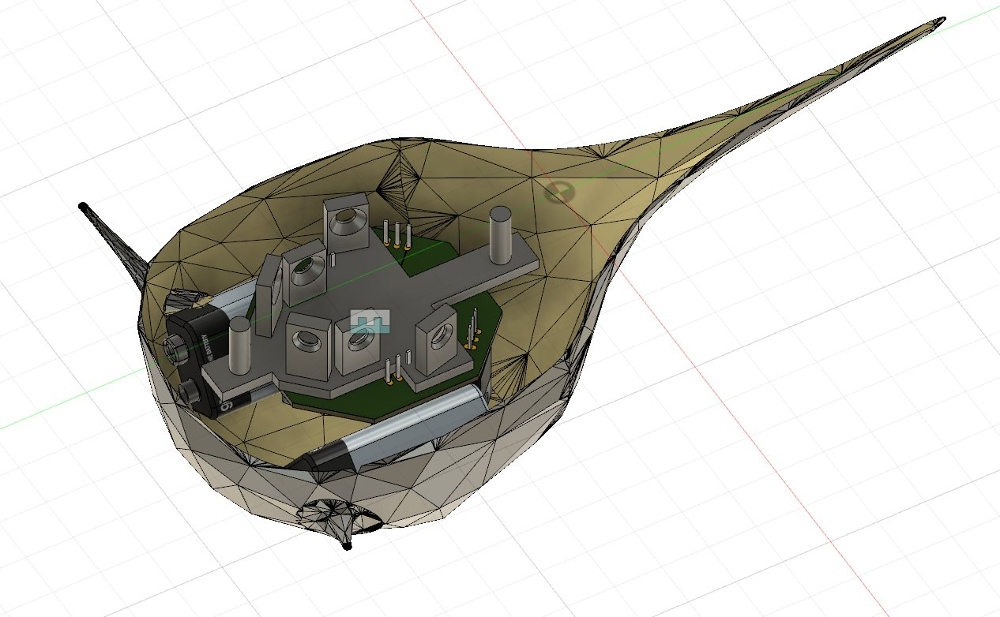
Assembly model of the robotic nauplius
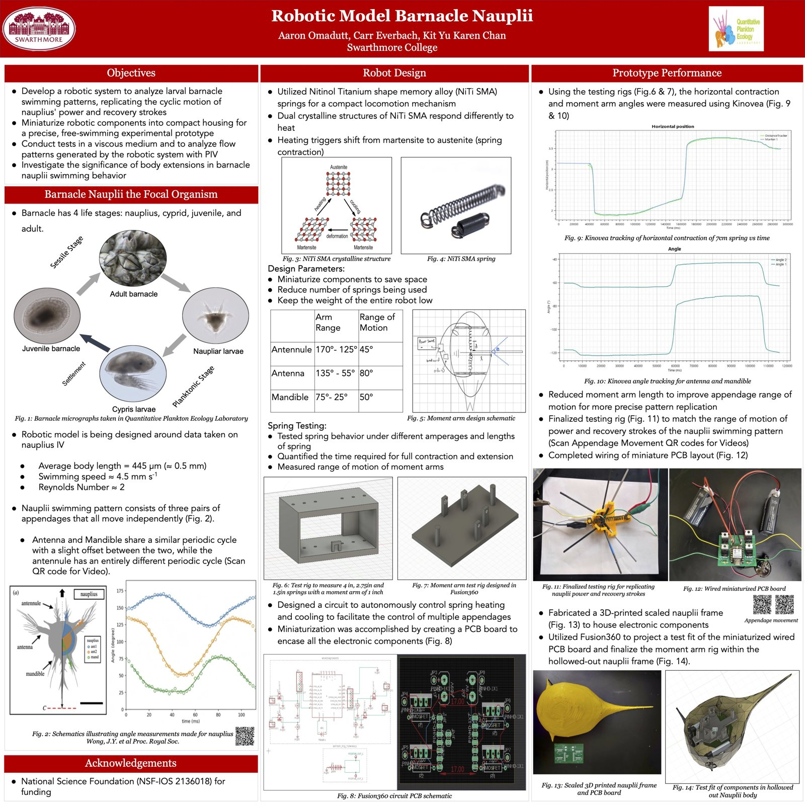
Conference poster, SICB
Omnidirectional sorting robot
Senior engineering capstone, Swarthmore College. Team of three.
Swerve drive kinematics
PID control
Computer vision
Java
Fusion 360
CNC milling
We designed, built, and programmed a four-wheel independent steering robot that uses a web camera to find, sort, and move colored boxes, simulating an industrial sorting cell. High maneuverability combined with object detection is directly useful in warehouses and processing plants, where items constantly need to be located and moved.
The work split into three areas: electro-mechanical prototyping, the swerve drive kinematics in software, and color detection with computer vision. The robot runs in both an autonomous sorting mode and a teleoperated mode.
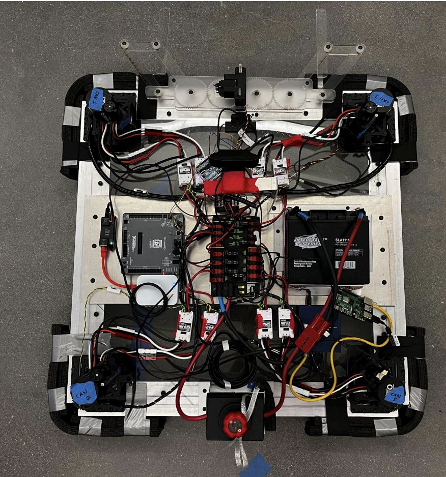
Drivetrain CAD
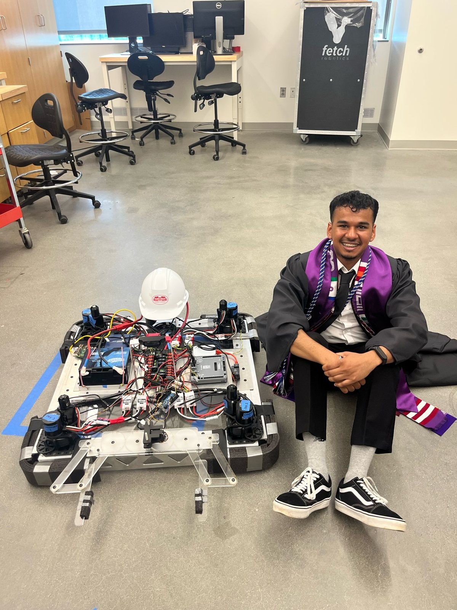
The finished robotAutonomous sorting demoTeleoperated demo
I designed and built a high-power rocket flown on an H-class motor. OpenRocket simulations drove the design, optimizing apogee and parachute deployment from mass, nose cone aerodynamics, and launch conditions.
An analysis of the nose cone's subsonic performance set its profile, which I modeled in Fusion 360 and 3D printed. The rocket carries an integrated electronics bay for timed parachute deployment and calibrated masses to hold the center of gravity ahead of the center of pressure.
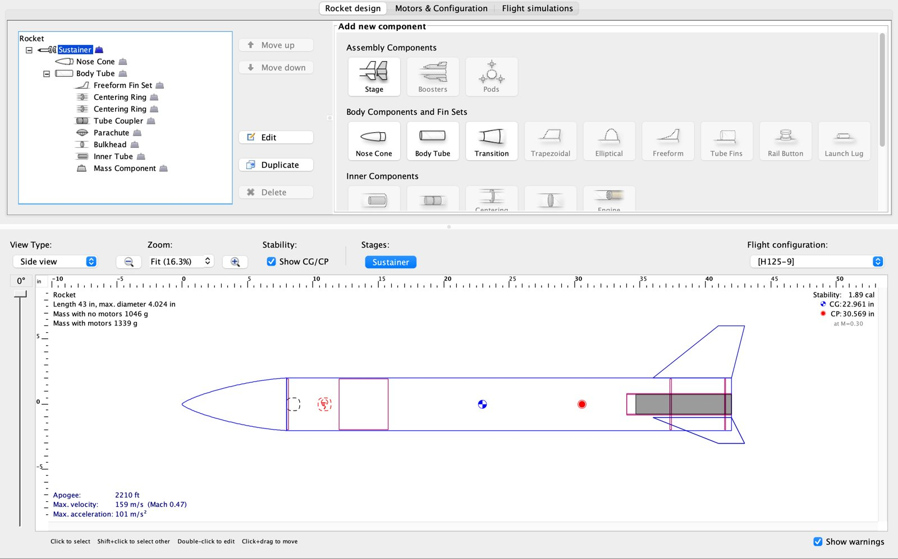
OpenRocket design and stability layout
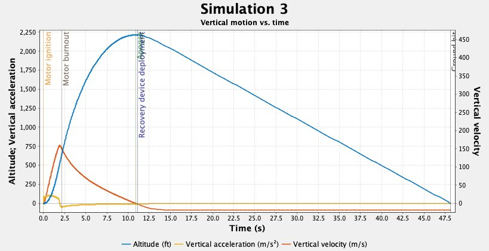
Simulated flight profile
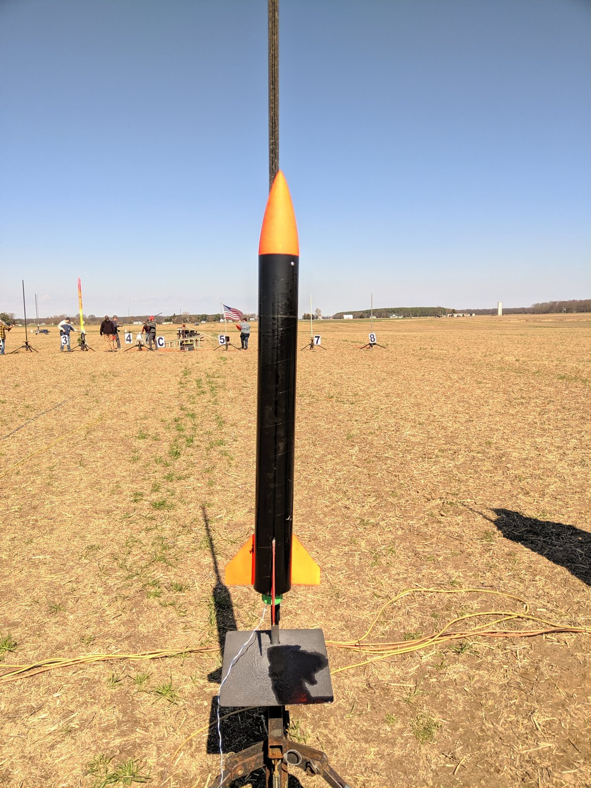
The finished rocketLaunch
CNC bearing box with generative engraving
Computer-Aided Manufacturing coursework, Swarthmore College. With Mateo C.
Fusion 360 CAM
CNC milling
Python
G-code
RenShape
A cylindrical box that uses marbles to simulate the motion of a ball bearing, designed in Fusion 360 and milled from RenShape tooling board with CAM toolpaths I configured.
For the lid, we wrote a Python program that generates a random Piet Mondrian-style grid and emits G-code directly: spaced lines for the grid, cross-hatching for the filled cells, with controlled feed rates, plunge rates, and depth of cut. Every seed gives a different, reproducible lid.
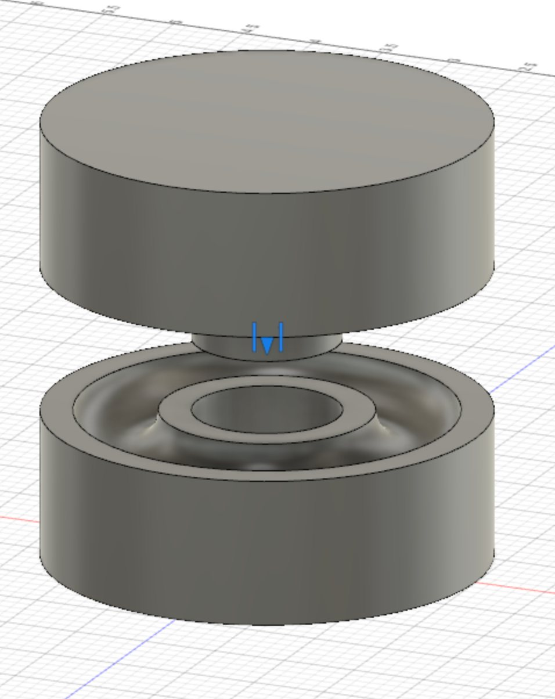
Assembly model
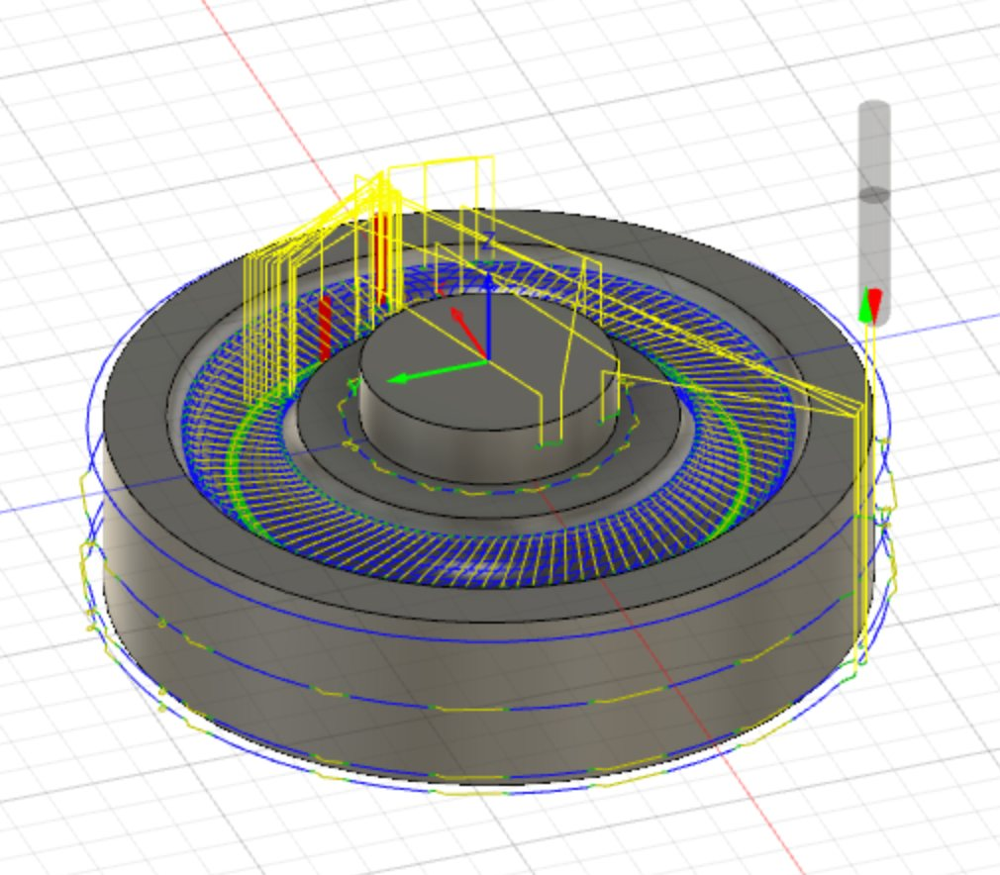
Contour toolpath
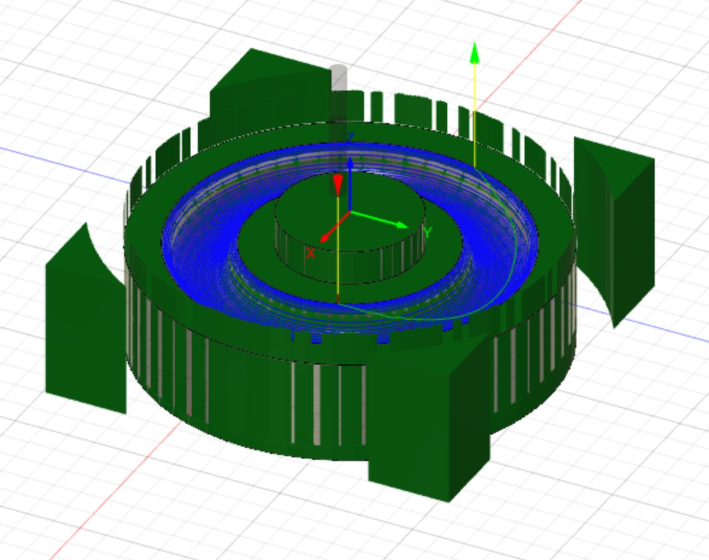
CAM setupToolpath simulation
Show the G-code generator (Python)
"""
Created on Mon Sep 19 15:25:24 2022
@author: Mateo C. & Aaron O.
Randomized Piet-Mondrian G-code engraver
"""
import numpy
from numpy import sqrt,linspace,exp
from numpy.linalg import norm
import matplotlib.pyplot as plt
import random
import sys
HEADER = '''%
(G90 = absolute coordinates)
G90
(G17 = XY plane selection)
G17
(G20 = inches, G21 = mm)
G20
(G28 = go home position; Z0 = hit Z zero before X/Y move, G91 specify Z position relative to machine zero)
G28 G91 Z0
(G90 = absolute coordinates)
G90
(G54 = workspace coordinates)
G54
'''
FOOTER = '''(end of program)
M30
%
'''
num_lines = 6 # Total number of lines
width = 3 # Width of the box
bound = 1.0 * width / (num_lines * 2) # Minimum gap for lines from the edge of the box
tol = bound # Minimum gap between lines
box_a_row_col = num_lines + 1 # Number of boxes per row/column
tot_boxes = (num_lines + 1)**2 # Total number of boxes in the grid
lines_per_box = 6 # Number of lines per axis of box to create hatching
colours = ["k-", "b-", "r-", "y-"] # matplotlib references for colours used in a typical Mondrian painting
line_thickness = 0.5 # Thickness of the line used for hatching
def rand_vert_lines():
xcords = [0] * num_lines
for i, cord, in enumerate (xcords):
xcords[i] = random.uniform(bound, width - bound)
while i > 0 and is_too_close(tol, xcords[i], i, xcords):
xcords[i] = random.uniform(bound, width - bound)
return xcords
def rand_ho_lines():
ycords = [0] * num_lines
for i, cord, in enumerate (ycords):
ycords[i] = random.uniform(bound, width - bound)
while i > 0 and is_too_close(tol, ycords[i], i, ycords):
ycords[i] = random.uniform(bound, width - bound)
return ycords
def random_boxes():
boxes = [0] * (box_a_row_col)
for i in range(box_a_row_col):
boxes[i] = random.randint(0, box_a_row_col - 1)
return boxes
def plot_boxes(v_cords, h_cords, b_indices, h_paths):
for i in range (len(b_indices)):
x_bot = v_cords[i]
x_top = v_cords[i + 1]
y_bot = h_cords[b_indices[i]]
y_top = h_cords[b_indices[i] + 1]
create_hatch(x_bot, x_top, y_bot, y_top, h_paths)
return None
def create_hatch(x_bot, x_top, y_bot, y_top, h_paths):
delta_x = (x_top - x_bot) / lines_per_box
delta_y = (y_top - y_bot) / lines_per_box
rand_colour = colours[0]
# Use "rand_colour = colours[random.randint(0,len(colours)) - 1]" if you
# want the boxes to be randomly coloured black, blue, red, or yellow
for i in range (lines_per_box):
x_plus_delta_i = x_bot + i * delta_x
plt.plot([x_plus_delta_i, x_plus_delta_i], [y_bot, y_top], rand_colour, linewidth = line_thickness)
h_paths.append([[x_plus_delta_i, y_bot],
[x_plus_delta_i, y_top]])
y_plus_delta_i = y_bot + i * delta_y
plt.plot([x_bot, x_top], [y_plus_delta_i, y_plus_delta_i], rand_colour, linewidth = line_thickness)
h_paths.append([[x_bot, y_plus_delta_i],
[x_top, y_plus_delta_i]])
return None
def is_too_close(tol, c0, curr_index, coordinates):
is_near = False
for j in range(curr_index):
if abs(c0 - coordinates[j]) < tol:
is_near = True
return is_near
def engrave_toolpath(ncfile, # opened file that can be written to
path, # points along path to engrave
feed_rate_mm_per_min, # feed rate in mm per min
feed_height_mm, # feed/retract height above surface
depth_of_cut_mm, # depth of cut below surface
path_is_closed, # should we return to the first point after the last one?
cutter_is_down): # is the cutter currently down?
# make sure we have at least 2 points
assert len(path) >= 2
# plunge rate is usually 1/3 feed rate
plunge_rate_mm_per_min = int(feed_rate_mm_per_min / 3)
# get first point in path
x0, y0 = path[0]
if cutter_is_down:
# if cutter was down, come up to feed height, then go to start position
ncfile.write(f'G0 Z{feed_height_mm:.3f}\n')
ncfile.write(f'X{x0:.3f} Y{y0:.3f}\n')
else:
# if cutter was already, up, go to start position, then rapid
# down to feed height
ncfile.write(f'G0 X{x0:.3f} Y{y0:.3f}\n')
ncfile.write(f'Z{feed_height_mm}\n')
# linear move down to cutting depth
ncfile.write(f'G1 Z-{depth_of_cut_mm:.3f} F{plunge_rate_mm_per_min}\n')
# get second point in path
x1, y1 = path[1]
# move horizontally to second point at cutting feed rate
ncfile.write(f'X{x1:.3f} Y{y1:.3f} F{feed_rate_mm_per_min}\n')
# for every point from the third on, just keep moving - no need to re-specify feed rate
for xi, yi in path[2:]:
ncfile.write(f'X{xi:.3f} Y{yi:.3f}\n')
if path_is_closed:
# return back to our starting point at the same linear feedrate
ncfile.write(f'X{x0:.3f} Y{y0:.3f}\n')
def emit_gcode(paths, gcode_filename,
tool_number, spindle_speed,
feed_rate_mm_per_min,
feed_height_mm,
depth_of_cut_mm):
with open(gcode_filename, 'w') as ncfile:
ncfile.write(HEADER)
# select our tool
ncfile.write('\n(tool change)\n')
ncfile.write(f'T{tool_number} M6\n\n')
# turn on spindle
ncfile.write('(turn on spindle)\n')
ncfile.write(f'S{spindle_speed} M3\n\n')
# initially, the cutter is up after homing
cutter_is_down = False
# all paths are closed
path_is_closed = True
for path in paths:
# emit the toolpath for this engraving
engrave_toolpath(ncfile, path,
feed_rate_mm_per_min,
feed_height_mm,
depth_of_cut_mm,
path_is_closed,
cutter_is_down)
# after the first path (and all others), cutter
# is down below the surface
cutter_is_down = True
ncfile.write(FOOTER)
print('wrote', gcode_filename)
def main():
#seed = random.randint(0, 100000000)
seed = 78495222
print('got seed', seed)
random.seed(seed)
#print(random.getstate())
box_paths = []
hatch_paths = []
vert_cords = sorted(rand_vert_lines())
ho_cords = sorted(rand_ho_lines())
box_indices = random_boxes()
for i, x_cord in enumerate (vert_cords):
plt.plot([x_cord, x_cord], [0, width], "k-")
box_paths.append([[x_cord, 0],
[x_cord, width]])
for i, y_cord in enumerate (ho_cords):
plt.plot([0, width], [y_cord, y_cord], "k-")
box_paths.append([[0, y_cord],
[width, y_cord]])
full_vert_bounds = [0] + vert_cords + [width]
full_ho_bounds = [0] + ho_cords + [width]
plot_boxes(full_vert_bounds, full_ho_bounds, box_indices, hatch_paths)
emit_gcode(box_paths, 'engrave_boxes.nc',
tool_number=965,
spindle_speed=10000,
feed_rate_mm_per_min=25,
feed_height_mm=0.2,
depth_of_cut_mm=0.06)
emit_gcode(hatch_paths, 'engrave_hatching.nc',
tool_number=965,
spindle_speed=10000,
feed_rate_mm_per_min=25,
feed_height_mm=0.4,
depth_of_cut_mm=0.015)
main()
Wind tunnel testing and airfoil analysis
Experimentation for Engineering Design coursework, Swarthmore College.
NACA 1412
Wind tunnel testing
Pressure measurement
MATLAB
3D printing
I modeled a NACA 1412 airfoil in Fusion 360, 3D printed it, and mounted it in a wind tunnel to measure its pressure distribution and wake. Data were collected and reduced in MATLAB.
The study looked at how the leading edge, trailing edge, camber, and chord length affect lift and drag coefficients across angle of attack. Both coefficients rose with angle of attack until stall set in near 20 degrees, where lift dropped. The measured parameters then fed a simulation to explore designs that delay stall.
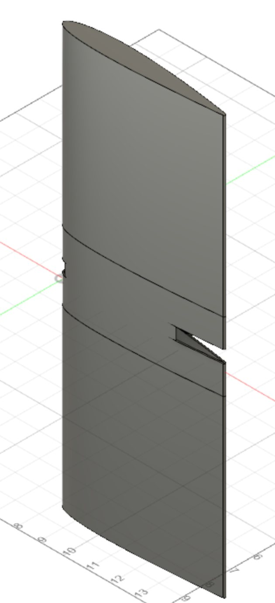
Airfoil model
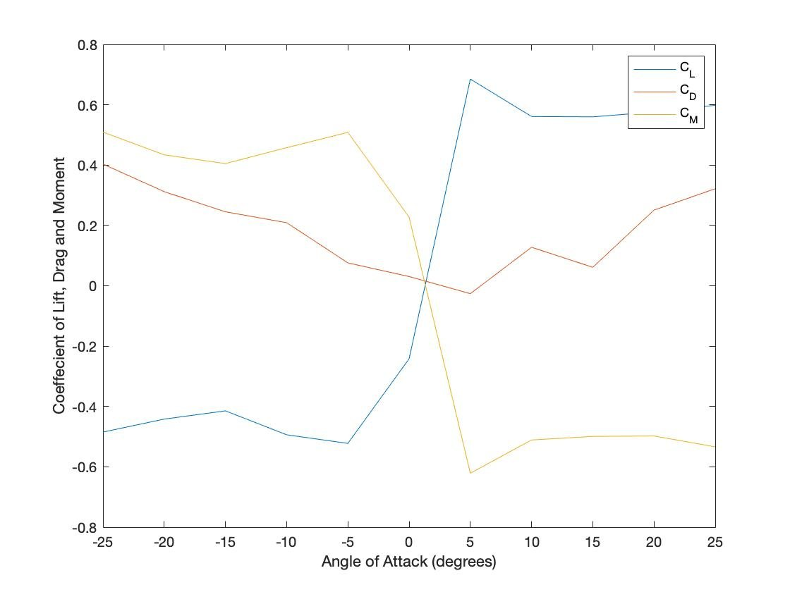
Measured coefficients
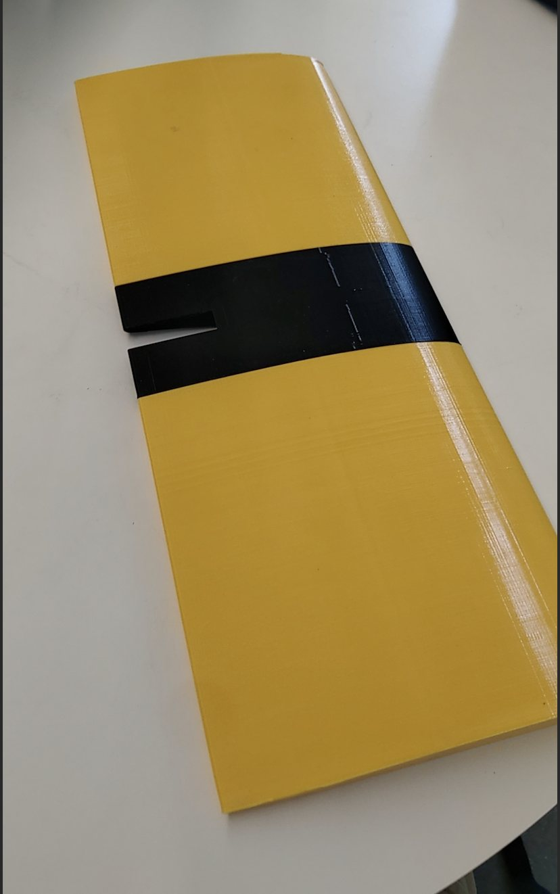
Printed test articleWind tunnel run
Path planning and obstacle avoidance for a differential drive robot
Mathematical modeling final paper, Swarthmore College.
Kinematics
Control theory
Potential fields
Differential equations
MATLAB
I modeled a differential drive robot from its kinematics and dynamics and used the model to plan paths through environments with obstacles. The goal was efficient, safe navigation, the same problem faced by mobile robots and automated vehicles.
Guidance uses a potential field: the goal attracts, obstacles repel, and the robot follows the resulting gradient. I implemented both preplanned and real-time trajectory execution in MATLAB and compared the results. The full paper is below.